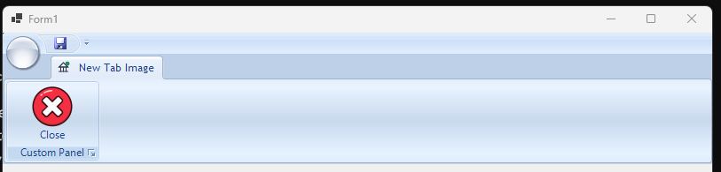

Overview
The ribbon draws a tabbed command bar — tabs, panels, buttons — on top of an ordinary Windows Forms window. The point of this fork is that it behaves the same at runtime and inside Visual Studio's out-of-process designer, which is where ribbon controls usually fall apart.
It is published as a package rather than a loose DLL: the package is what puts the control in the toolbox, so a project that adds the package and a project that references a DLL end up in different places. Per-panel spacing and padding knobs control how densely the groups sit.
What it does
Designer-safe by design
Ported to .NET 10 and repaired so the control renders in the designer, not just at runtime — including the toolbox entry.
One package, every project
The same dotnet add package call per project, so each one gets the toolbox reference instead of a hand-copied DLL.
Spacing you can tune
Per-panel spacing and padding settings, plus a short guide in the README for keeping groups and buttons aligned.
Built on every push
A GitHub Actions workflow compiles the branch so the .NET 10 port does not silently rot.